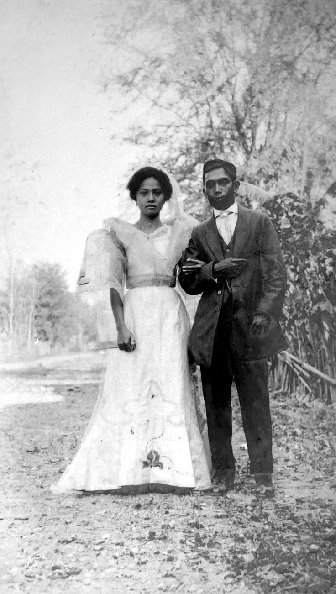
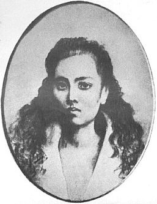
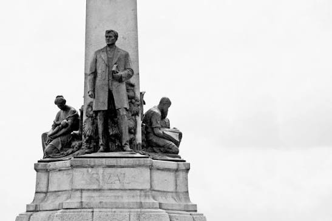

1861
Who Was Rizal
José Rizal was born in 1861 in Calamba, in a Philippines governed almost entirely through the Spanish colonial church. From childhood he showed an unusual restlessness of mind: reading widely, questioning what he was taught, and noticing the small daily indignities that colonial rule had made ordinary. He trained as a physician, but medicine was never really his calling. Novels were.
Rizal spent years studying and traveling through Europe, where distance gave him something he could not have found at home: the ability to see his own country clearly, from the outside. He watched how other nations educated their citizens and treated their poor, and he could not unsee the contrast when he thought of the Philippines. What he saw, and what he remembered, became two novels that Spain would eventually call the most dangerous documents in the archipelago.

1887
Noli Me Tangere
Published in 1887, Noli Me Tangere, whose title translates to "Touch Me Not," follows Crisóstomo Ibarra as he returns home to the Philippines after years of study abroad. He comes back hopeful, intending to build a school and reconcile with the town that raised him. Instead he finds a community quietly ruled by its friars, where land, marriage, and even truth itself pass through clerical hands before they reach anyone else.
Through Ibarra's homecoming, Rizal exposed clerical abuse, financial corruption, and a colonial legal system that treated honesty as a form of rebellion. The novel does not read like a pamphlet. It reads like a story about people the reader comes to care for, which made its criticisms land harder than a political tract ever could. Spanish authorities banned the book outright in the Philippines. Naturally, this only made everyone want to read it, and copies were smuggled in and passed hand to hand for years.

1891
El Filibusterismo
The 1891 sequel is darker and angrier than its predecessor. Years after the events of Noli, a disguised Ibarra returns to the Philippines under a new identity, this time intending not to reform the system but to destroy it outright. Where Noli diagnosed the disease quietly working through Filipino society, El Filibusterismo asks a harder question: what happens once patience runs out and reform starts to look like a losing bet.
The novel is heavier, more cynical, and less forgiving of the institutions it depicts. Rizal wrote it while living the same tension his character wrestles with, caught between a belief in peaceful reform and a growing awareness that the colonial system was not built to reform itself. It was published five years before his execution, and read today, it feels less like fiction and more like a warning he was partly writing to himself.
Symbol and Constraint
Maria Clara


Maria Clara is introduced early in Noli Me Tangere as Ibarra's beloved and the daughter of Capitán Tiago, one of the wealthiest men in town. She is devout, modest, and gentle, and by every standard of her era, the ideal young Filipina: raised to be pleasing, obedient, and untouched by scandal. Rizal spends the opening chapters letting the reader fall for her the same way Ibarra has.
Then he complicates that ideal. Maria Clara is later revealed to be the secret daughter of Padre Dámaso, born of an affair the friar had with her mother while her mother was married to another man. The very friar who spends the novel enforcing purity and moral discipline on everyone around him turns out to have broken that code himself, quietly, years earlier, and let someone else carry the consequences.
What happens to Maria Clara afterward is arguably the clearest illustration in the entire novel of how little control women held over their own lives. Every major decision about her future — who she will marry, what she is allowed to know about her own parentage, whether her engagement to Ibarra survives — is made by the men around her: her father, Padre Dámaso, the church itself. She is rarely consulted, and even more rarely listened to when she does speak. Many readers view her as a stand-in for the Philippines under colonial rule more broadly: portrayed as beautiful and cherished, while in practice being shaped, controlled, and ultimately confined by the very institutions that claimed to protect her. Not every critic agrees with this reading. Some argue the novel's treatment of Maria Clara reinforces the submissive ideal it seems to critique rather than genuinely challenging it, since she never resists in any lasting way. That tension is worth sitting with rather than resolving too neatly.
Her arc in Noli ends with her entering a convent instead of marrying a man chosen for her by others, presented as her one act of self-determination. It's worth noticing how narrow that "choice" actually is: she can refuse one form of control only by accepting another, permanent one. In the sequel, El Filibusterismo, it is revealed that she died inside that convent, with strong implications that she suffered abuse from the friars meant to be her caretakers. The novel gives her no resolution, no rescue, and no final voice of her own.
Why this still matters today. The "ideal woman" standard Maria Clara represents did not stay in the nineteenth century. The phrase "huwag kang Maria Clara," still used casually in the Philippines today, invokes her name to criticize someone, usually a woman, for being overly shy, passive, or coy. Ongoing debates over how much authority religious institutions should hold over personal decisions — including reproductive health, sex education, and the fact that the Philippines remains one of the only countries in the world without divorce — echo the same core question the novel raised: who gets to decide what happens to a woman's body, marriage, and future. Rizal was writing about his own specific moment in history, but the structures he was criticizing — institutions that claim to protect people while quietly controlling them — are not unique to his century.

A
A Society Built in Layers
Rizal's Philippines was not one society but several, stacked on top of each other. At the top sat Spanish friars and colonial officials, who held not just religious authority but practical control over land titles, schooling, and local government. Below them was a rising class of educated mestizos, Filipinos of mixed Spanish and native ancestry who had money and some access to education, but still no real political power. Rizal's own family belonged to this middle layer. Beneath both groups was the much larger population of Filipino farmers and laborers, who had the least protection and the least say in anything happening around them.

B
Where a Daughter Like Maria Clara Fit
Capitán Tiago's household sat comfortably within that mestizo class — wealthy enough to host friars as guests and arrange advantageous marriages, but still ultimately dependent on staying in the Church's good graces. A daughter in a family like this carried a specific kind of value: she represented the family's respectability, its marriageability, and its standing in front of both colonial officials and clergy. This is precisely why Maria Clara's future was treated as a family and church decision rather than a personal one. Her marriage prospects, first to Ibarra and later to the Spaniard Linares, were never really about her own preferences. They were about which alliance served her father's position best.

C
Marriage as a Family Transaction
Arranged marriage in this period was not a background detail. It was one of the primary tools families used to secure status, and daughters were routinely treated as the currency in that arrangement. A woman's obedience was not framed as a personality trait so much as a family asset, something to be protected and, when convenient, spent. Understanding this layered, transactional structure is essential to understanding why Maria Clara had so little room to make her own choices. She was not failed by one cruel individual. She was operating inside a system built, from multiple directions at once, to make her compliance the expected outcome.


D
Friars as Rulers, Not Just Clergy
Under Spanish rule, parish friars were often the single most powerful men in a Philippine town — more influential day to day than any colonial governor. They controlled land titles, ran the local schools, kept the civil records, and frequently had final say over who could marry whom. Rizal's novels take direct aim at this arrangement. His friars are rarely portrayed as simply corrupt individuals; they represent an entire structure where religious authority and practical, worldly power were fused into one, with almost no outside check on either.

E
The Hypocrisy at the Center of Her Story
Padre Dámaso is the clearest embodiment of this fusion, and his relationship to Maria Clara is where Rizal makes the hypocrisy explicit rather than implied. Dámaso spends the novel lecturing others on obedience, chastity, and duty to family, all while having fathered a child through an affair he never had to answer for. He faces no real consequence. Maria Clara does. She inherits the secrecy, the shame, and eventually the convent, while the man responsible keeps his robes, his reputation, and his authority over her fate.

F
A System Built to Protect Itself
This is the throughline connecting the Frailocracy back to Maria Clara directly: the same institutions that policed her morality, decided her marriage, and eventually confined her to a convent were never actually neutral. They were self-interested, and structured so that the people running them rarely had to answer for their own conduct. Rizal was not writing about one bad friar. He was describing a closed loop of power where accusation, punishment, and forgiveness all moved in one direction only.

An Interactive Moment
One Day — Walk Through Maria Clara's Last Free Day
Live one day in her place, from dawn to convent gate. Every choice changes the words along the way. None of them change where you end up.
Today
Legacy & Modern Echoes
Rizal's influence in the Philippines today goes well beyond the two novels. He is the country's national hero, his name attached to streets, provinces, and a public holiday, and his writing is still required reading in Philippine schools. That legacy is also debated. Some critics argue Rizal has been turned into a safe, sanitized symbol — celebrated in monuments while the sharper edges of what he actually criticized, clerical power, colonial mentality, and the treatment of women, get left out of the commemoration. Reading Noli and El Filibusterismo directly, rather than through the version taught as patriotic ceremony, tends to bring those sharper edges back into view.

1896
Martyrdom & Reflection
Rizal was executed in 1896, at 35, for writings that told the Philippines the truth about itself. He didn't live to see independence — but he gave the country the words to imagine it.